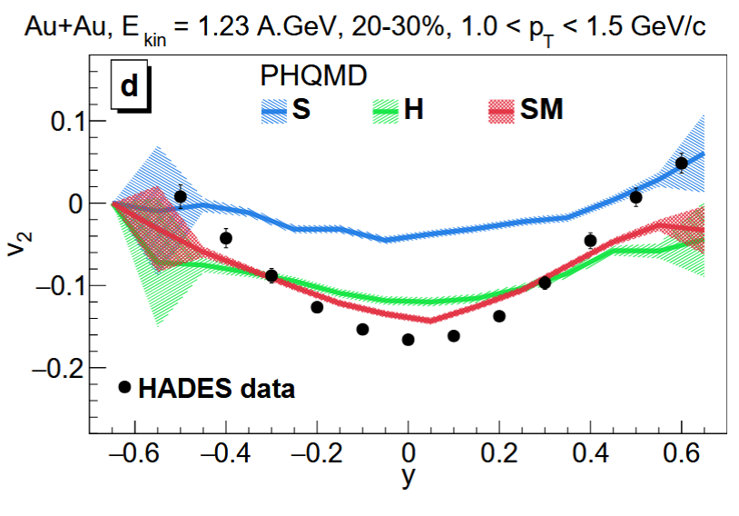
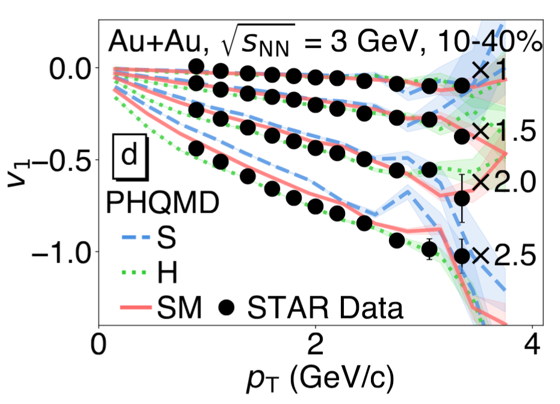

PHSD-PHQMD is a Fortran-based unified transport simulation framework for relativistic heavy-ion collisions aw well as proton and pion induced reactions. It combines two complementary descriptions of baryon dynamics: PHSD, which uses mean-field BUU transport, and PHQMD, which uses a Quantum Molecular Dynamics (QMD) n-body approach. The overview image below summarizes this modeling scheme.
In both modes, the subsequent evolution includes quarks, gluons, mesons, and hadrons, propagated within non-equilibrium Kadanoff-Baym and BUU dynamics.
Interactions are handled through a collision integral for off-shell hadrons and QGP partons, with the Dynamical-QuasiParticle Model (DQPM) describing the partonic medium.
Final-state nuclear fragments and produced clusters can be reconstructed with MST (Minimum Spanning Tree), SACA (Simulated Annealing Cluster Algorithm), or coalescence-based algorithms.
The simulated events are exported in OSCAR, ROOT, and Rivet formats.
1. Two Initialization Modes
PHSD mode: A+A initialization and baryon propagation with mean-field dynamics (BUU).
PHQMD mode: A+A initialization and baryon propagation with Quantum Molecular Dynamics (QMD).
2. Shared Transport Core
Parallel ensemble method. Propagation of partons (quarks, gluons) and mesons with off-shell mean-field Kadanoff-Baym and/or BUU dynamics.
3. Collision Integral
Unified treatment of off-shell hadronic and partonic (QGP) interactions.
4. Cluster Recognition
MST, SACA, and coalescence mechanisms are available to reconstruct final-state clusters.
5. Final Outputs
Event-by-event outputs prepared for analysis workflows in OSCAR, ROOT, and Rivet-like formats.
6. Continuous Dynamics
No artificial micro-to-macro handover: a continuous dynamical description from initial state to final hadrons and leptons.
New Features
Special Features of PHSD-PHQMD
Possibility to study mean-field versus QMD dynamics based on one framework
Kadanoff-Baym dynamics for off-shell hadrons and partons
Phase transition from hadronic to partonic matter
Description of QGP in terms of strongly interacting quasiparticles based on DQPM in-line with lQCD EoS
Chiral symmetry restoration via Schwinger mechanism for string breaking
In-medium effects within G(T)-matrix for strangeness
Realization of n↔m reactions for specific channels
Open/hidden charm/bottom dynamics
Electromagnetic probes (dileptons, photons)
Dark matter: dark photons
Dynamically generated electromagnetic fields
PHQMD mode:
- EoS with hard, soft and soft momentum dependent potential
- Mechanisms for cluster production in PHQMD: MST/SACA, kinetic and coalescence
Parton transport and hadronization from the dynamical quasiparticle point of viewW. Cassing, E. L. Bratkovskaya · Phys. Rev. C 78 (2008) 034919
Time evolution in the parton, meson and baryon number.
Parton-Hadron-String Dynamics: an off-shell transport approach for relativistic energiesW. Cassing, E. L. Bratkovskaya · Nucl. Phys. A 831 (2009) 215-242
Partonic energy fraction with time.
Exploring the partonic phase at finite chemical potential within an extended off-shell transport approachP. Moreau, O. Soloveva, L. Oliva, T. Song, W. Cassing, E. Bratkovskaya · Phys. Rev. C 100 (2019) 014911
Energy density for central Pb+Pb collisions.
Electromagnetic emission from strongly interacting hadronic and partonic matter created in heavy-ion collisionsA. W. Romero Jorge, T. Song, Q. Zhou, E. Bratkovskaya · Phys. Rev. C 111 (2025) 064904
Invariant mass spectra for Pb+Pb.
Parton-Hadron-Quantum-Molecular Dynamics (PHQMD) - A Novel Microscopic N-Body Transport Approach for Heavy-Ion Collisions, Dynamical Cluster Formation and Hypernuclei ProductionJ. Aichelin, E. Bratkovskaya, A. Le Fevre, V. Kireyeu, V. Kolesnikov, Y. Leifels, V. Voronyuk, G. Coci · Phys. Rev. C 101 (2020) 044905
Rise-and-fall of cluster multiplicity versus bound charge.
Dynamical mechanisms for deuteron production at mid-rapidity in relativistic heavy-ion collisions from energies available at the GSI Schwerionensynchrotron to those at the BNL Relativistic Heavy Ion ColliderG. Coci, S. Gläßel, V. Kireyeu, J. Aichelin, C. Blume, E. Bratkovskaya, V. Kolesnikov, V. Voronyuk · Phys. Rev. C 108 (2023) 014902
Mid-rapidity excitation function for deuterons in Au+Au.
Constraints on the equation-of-state from low energy heavy-ion collisions within the PHQMD microscopic approach with momentum-dependent potentialV. Kireyeu, V. Voronyuk, M. Winn, S. Gläßel, J. Aichelin · arXiv:2411.04969 (2024)

Elliptic-flow constraints and EoS sensitivity.
Probing the nuclear equation of state with clusters and hypernucleiY. Zhou, S. Gläßel, L. Yue-Hang et al. · Phys. Rev. C 113 (2026) 014909

Directed-flow constraints from light clusters for EoS scenarios.
Electromagnetic emission from strongly interacting hadronic and partonic matterElena Bratkovskaya · Non-equilibrium Dynamics (NeD-2026), France · Feb-2026Open slides
A Microscopic Transport Framework for Heavy-Ion Collisions from High to Low Energies - PHSD/PHQMDJiaxing Zhao · Non-equilibrium QCD and Transport @ Huizhou · Dec-2025Open slides
Cluster production in PHQMDElena Bratkovskaya · EMMI Workshop, GSI-Darmstadt · Nov-2025Open slides
Attenuation of jet partons and heavy quarks in strongly interacting QGPElena Bratkovskaya · CERN workshop on high-energy probes · Apr-2025Open slides
Constraining Dark Photon Kinetic Mixing in Heavy-Ion Collisions from SIS to LHC energiesA. W. Romero Jorge · Dark Matter Conference, Santander · Jun-2025Open slides
Combined constraints on dark photons from high-energy collisions, cosmology, and astrophysicsA. W. Romero Jorge · DMLab: DarkMatter@Bonn · Oct-2025Open slides
Kinetic and potential mechanisms for deuteron production in HICsGabriele Coci · STRONG workshop, Italy · Oct-2023Open slides
In-medium effects on hidden strangeness production in heavy-ion collisionsTaesoo Song · SQM conference, Korea · Jun-2022Open slides
The impact of electromagnetic and vortical fields in relativistic nuclear collisionsLucia Oliva · Arizona State University colloquium (online) · Jan-2021Open slides
Exploring the QGP at finite baryon chemical potential in and out of equilibriumElena Bratkovskaya · Arizona State University colloquium (online) · Jan-2021Open slides
Comparison of transport dynamics at 35 AGeV (left) and 10 AGeV (right).
System-size and energy scan
Pb+Pb at 158 AGeV (left), d+Au (center), and p+Pb at 5 TeV (right).
p+Pb at 5.0 TeV, b = 0
Lorentz-contracted view (right) and standard coordinate view (left).
Energy Density and Chiral Condensate Evolution (Au+Au at 200 GeV)
Left: space-time evolution of the total energy density. Right: evolution of the chiral condensate (SQC), illustrating in-medium chiral-symmetry restoration dynamics.
Navigate The Site
All content from the previous PHSD-PHQMD website is preserved and reorganized.
About PHSD-PHQMD
Method, physical assumptions, and transport-theory foundations.